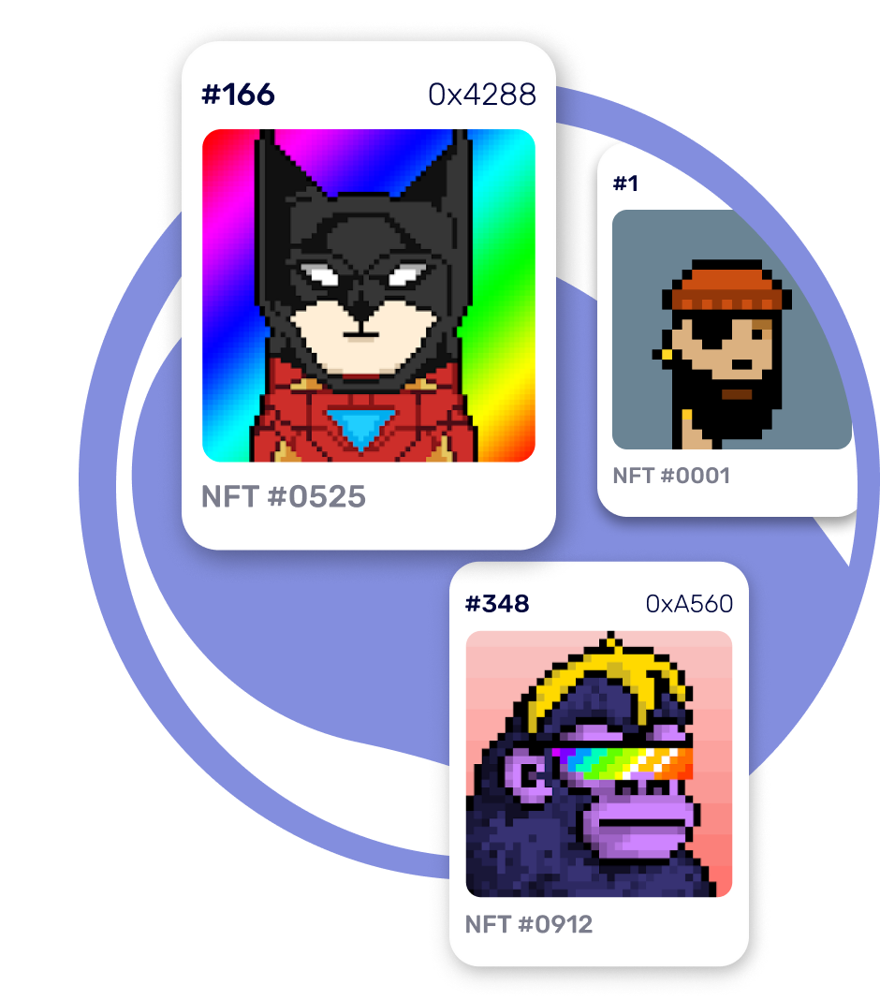
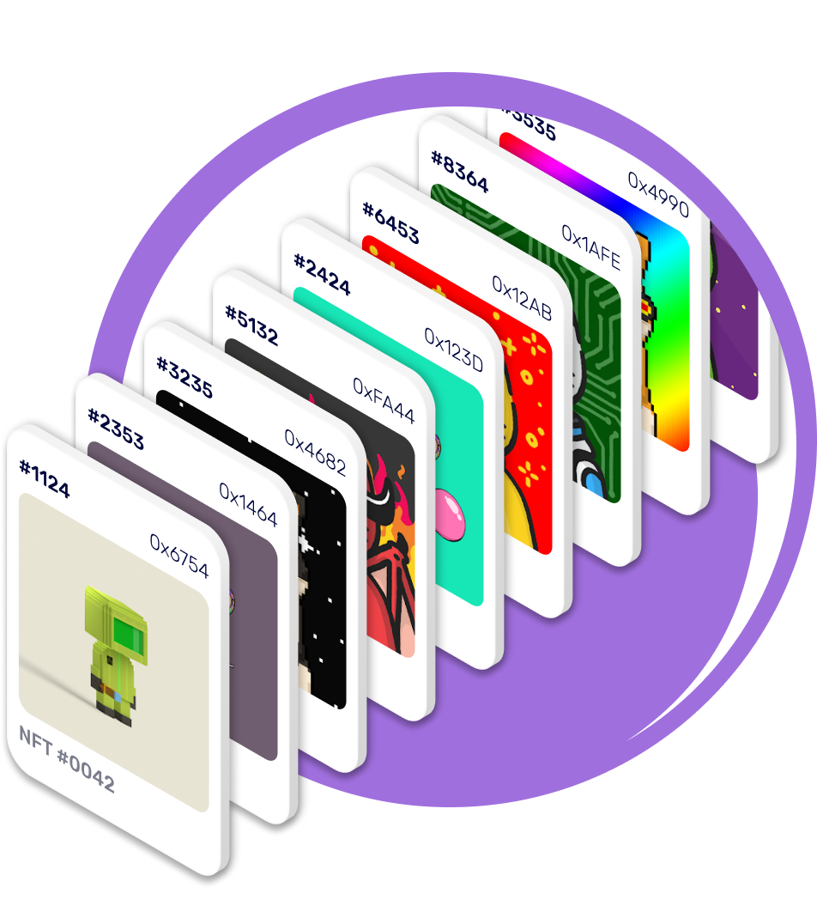

<div class="features">
    <div class="container features-blok">
        <h2>Дополнительные финансовые возможности с <span>META NFT</span></h2>
        <div class="features-blok_item">
            <div class="features-blok_item_text">
                <h3>01</h3>
                <p>Получай бонусы в токене MNFT за активность</p>
                <span>
                    Наиболее активные пользователи могут получать токены за свои действия в социальной сети MetaNFT. Это могут быть размещения NFT, совершение сделок, привлечение новых пользователей и увеличение количества подписчиков.
                </span>
            </div>
            <picture>
                <source media="(max-width:765px)" srcset="img/img1@1.png">
                <source media="(max-width:1120px)" srcset="img/@img1.png">
                
            </picture>
        </div>
        <div class="features-blok_item reverse">
            <svg width="117" height="139" class="svg-pink">
                <use xmlns:xlink="http://www.w3.org/1999/xlink" xlink:href="img/pink-svg.svg#pink-svg"></use>
            </svg>
            <svg width="157" height="122" class="blue-svg">
                <use xmlns:xlink="http://www.w3.org/1999/xlink" xlink:href="img/blue-svg.svg#blue-svg"></use>
            </svg>
            <picture>
                <source media="(max-width:765px)" srcset="img/img1@2.png">
                <source media="(max-width:1120px)" srcset="img/@img2.png">
                
            </picture>
            <div class="features-blok_item_text">
                <h3>02</h3>
                <p>Зарабатывай на стейкинге и фарминге MNFT</p>
                <span>
                    Наша команда продумала токеномику проекта до мелочей, чтобы любой пользователь смог не только окунуться в мир NFT, но и извлечь выгоду от работы с токеном MetaNFT.
                </span>
            </div>
        </div>
        <div class="features-blok_item">
            <svg width="198" height="117" class="green-svg">
                <use xmlns:xlink="http://www.w3.org/1999/xlink" xlink:href="img/green-svg.svg#green-svg"></use>
            </svg>
            <div class="features-blok_item_text">
                <h3>03</h3>
                <p>Минимизируй комиссии за транзакции NFT</p>
                <span>
                    Благодаря собственному маркетплейсу NFT, пользователи могут покупать и продавать NFT не переплачивая комиссии посредникам.
                </span>
            </div>
            <picture>
                <source media="(max-width:765px)" srcset="img/img1@3.png">
                <source media="(max-width:1120px)" srcset="img/@img3.png">
                
            </picture>
        </div>
    </div>
</div>
